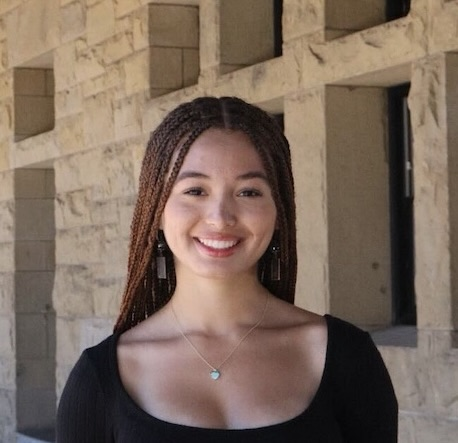

Lily O'Brien
CS Student @ Stanford University (Human Computer Interaction track)
A Little About Me!
Hi! Welcome to my page! I’m a sophomore interested in the intersectionality of technology and health, and hope to spend lots of time delving into this topic to create more accessible technology on a global-level. On a personal note, I am also interested in literature and learning languages, so please feel free to reach out to me about these things, as well!
Research
Cardiovascular Sensing using Bayesian Inference
Under professor James Landay and mentored by Stanford PhD student Parker Ruth using priors for cardiovascular biomarkers to develop an algorithm that can predict heartbeats and blood pressure better than the existing approaches. We have exciting data to prove that our algorithm is doing a better job, and this paper will be published soon!
Poster! More info!What’s Next!
Participating in Stanford’s Bing Overseas Study Program (BOSP) in Kyoto, Japan for Spring 2026! I will spend three months at Doshisha University, pursuing my computer science degree while also delving into Japanese culture! I am beyond excited for this experience, and my main goals going into this experience are: learning more Japanese, visiting lots of gardens, and working for a Japanese company over the summer!
Previous Experiences
Stanford School of Medicine (Pediatric Oncology/Hematology)
I was a clinical data associate for a research group at Stanford’s School of Medicine that aimed to diagnose adolescents with various blood cancers sooner, and to also decrease the number of relapsed adolescents in North America. I ensured that the intensive study protocol for each patient was satisfied, and analyzed patients vitals/progress to help inform the study on whether the research drugs were effective for lowering cancer cells and cancer symptoms.
Silicon Valley x Keio International Exchange Program (SKIP)
Participated in a nearly century-old tradition of conducting a student exchance with Keio University in Tokyo, Japan. This 15 day long immersion program covered various topics such as bousai, Japanese traditional norms and history, as well as international networking with companies such as: SoftBank/LINE, Sanrio, Shibuya Government facilties, Studio Ghibli (本当に楽しかったね), Fukushima rebuilders, and more!
More info!Laumier Park App-Building (St. Louis, MO)
Built an interactive React Native mobile app to map park landmarks and enhance visitor engagement. I also performed geospatial and revenue data analyses for 50+ local businesses, providing insights for strategic planning, and created ArcGIS story maps visualizing demographic trends and business viability for stakeholders.
Awards
QuestBridge National College Match (2024) Awarded a full-ride scholarship to Stanford University
PEO STAR Scholarship (2024) $2,500 scholarship for women with strong academic merit who are graduating high school and plan to attend college
All-State Athletic Honor Roll (2022-2024) Recognized for playing a varsity sport (golf/basketball) and maintaining over a 3.5 GPA
Certifications
-
ArcGIS Technician 1 (2022)
-
USGIF Systems, second youngest person to attain this certification in the US (2023)